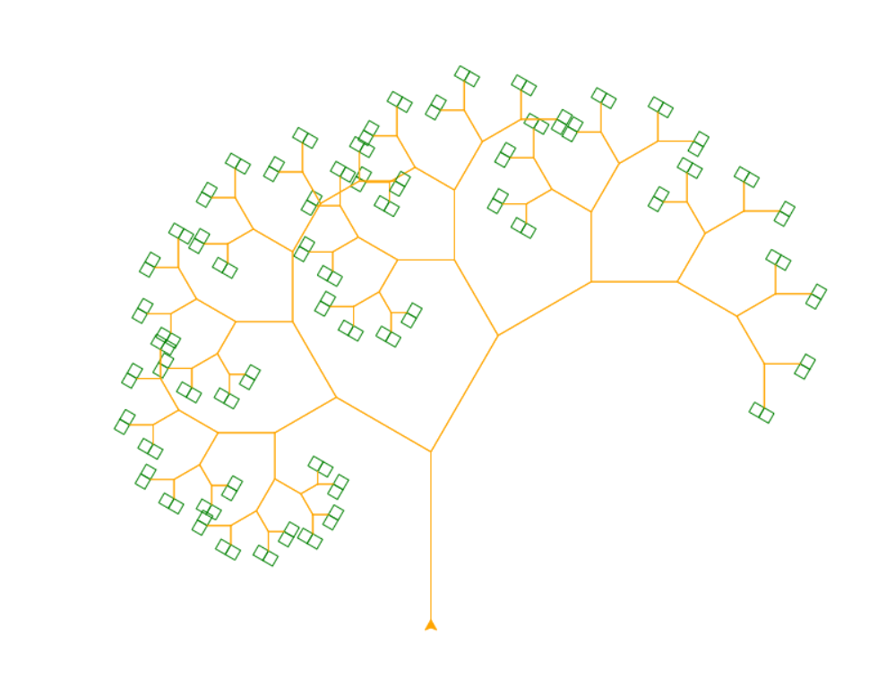
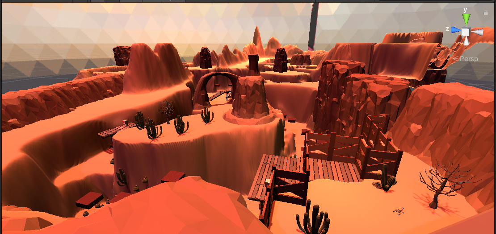
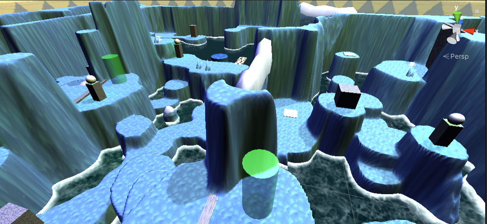

This week has been absolutely crazy with its shares of ups and downs.
First off, last Saturday I had an amazing time volunteering with my club ACM-W and teaching kids how to use the Python library turtle. With this library, we taught them some coding concepts such as functions, parameters, and even recursion. The best part about using turtle was that it allowed them to visualize what their code was doing. In the end, we created these fractal trees that looked like this:
The kids were super fun to work with and picked up on these concepts so quickly. It was awesome to see them experiment with their creativity and learn code at the same time. It would be awesome to work with libraries like this in the future for my own website, and I'm planning on looking more into p5.js to achieve this.
Then I had an extremely busy five days working on my Capstone project, finishing up Project 1 for this class, preparing for our discussion presentation on labor, and studying for a midterm for my Mobile App's class. For my Capstone, I was able to design two levels for this timebox, a desert and a polar level. Both took me way longer than expected:
 I also realized that this would be my last midterm in college (at least as an undergraduate). I certainly won't miss the hours spent looking at PowerPoint slides and all the anxiety the days before. I'm really happy with how my Project 1 turned out--the only thing I would want to change would be making it more responsive on devices. I think I fixed some of the main problems I had, but I know that there will always be room for improvement.
I've also been taking a lot more walks with the nice weather and sunny skies. From my last blog post, I tried following my own advice by spending more time with friends amidst my crazy week such as grabbing dinner and playing PS4 with them. I also ended up finishing three books--The Eight, The Wrath and the Dawn, and The Rose and the Dagger.
On top of all this, I found out that ACM-W won four student organization awards! I was extremely proud of our club and all the hard work our exec board has put into it. We needed to submit a picture, so I ended up creating a collage from all the photos throughout the years:

I'm hoping that this week will be a lot calmer, but I have a Capstone presentation to prepare and a Mobile Apps checkpoint to complete. At least my midterm is over, for better or for worse, and that the weather appears to getting warmer! I hope that it doesn't go back to the cold, but I know that I've been warned with this false spring.